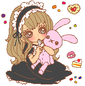
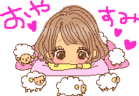

♡₊˚ Moda Alternativa・₊✧
~ Lolita ~

Moda japonesa caracterizada por sua estética altamente elaborada e inspiração em elementos do período vitoriano e rococó. As principais características incluem vestidos volumosos com saias rodadas, geralmente até os joelhos, cinturas marcadas, blusas de babados, laços grandes, meias-calças ou meias 3/4, sapatos de salto ou sapatilhas, e acessórios como luvas, chapéus e guarda-chuvas elaborados. A paleta de cores costuma ser suave e feminina, incluindo tons pastel e estampas como xadrez, florais ou de renda. É um estilo que enfatiza a delicadeza, a elegância e a modéstia, muitas vezes evocando uma imagem de conto de fadas ou de boneca.
~ Gótico ~

Se originou no final da década de 1970, inicialmente na música punk e no pós-punk, e se expandiu para moda e cultura visual. Caracterizado por uma estética sombria e muitas vezes dramática, a moda gótica abraça uma paleta de cores escuras, como preto, roxo profundo, vinho e verde escuro. As roupas frequentemente incluem peças como corsets, vestidos longos e fluidos, casacos de estilo vitoriano, botas pesadas, luvas de renda ou couro, jóias de prata ou prateadas com temas como cruzes, corvos ou motivos góticos. Os tecidos são geralmente opacos e texturizados, como veludo, renda, couro e seda. Maquiagem e penteados também são característicos, com olhos escuros, lábios pálidos ou em tons de vinho, e cabelos muitas vezes em cortes elaborados ou longos e soltos com destaque para tons escuros ou cores vibrantes como vermelho ou roxo.
Além do aspecto visual, o estilo gótico incorpora uma apreciação por temas como a morte, o romantismo obscuro, o gótico literário e a arquitetura medieval. É uma expressão cultural que enfatiza a individualidade, a introspecção e uma estética alternativa que desafia normas convencionais de moda e beleza.
~ Gyaru ~

Moda japonesa conhecida por sua aparência vibrante, exuberante e altamente glamourosa. Originado nos anos 1990, especialmente em Tóquio, o termo "gyaru" deriva da pronúncia japonesa da palavra em inglês "girl".
As características distintas do estilo gyaru incluem pele bronzeada artificialmente, cabelos volumosos e geralmente claros ou descoloridos, maquiagem intensa com ênfase nos olhos, como cílios postiços grandes e delineador marcante, além de lábios brilhantes. As roupas são tipicamente chamativas, com peças como mini-saias, shorts curtos, tops justos, meias até os joelhos ou meias 7/8, saltos altos e acessórios como bolsas grandes e óculos de sol extravagantes. A paleta de cores varia, mas frequentemente inclui tons vivos e estampas chamativas como pele de leopardo, xadrez ou listras. O estilo gyaru é também uma expressão de independência e autoconfiança feminina, muitas vezes associado a uma vida noturna agitada e a uma cultura de festas. É importante notar que o estilo gyaru evoluiu ao longo do tempo, dando origem a várias subcategorias como o "gyaru de rua" (gyaru-o), o "gyaru de escola" (kogyaru), entre outros, cada um com suas próprias nuances e interpretações da moda gyaru.
~ Jirai Kei ~

Uma tendência de moda japonesa que se destaca por sua estética única inspirada no estilo feminino japonês e do Yami Kawaii, no entanto, roupas que consistem em Goth Punk, Jersey Maid e moda alternativa geral mais sombria também foram populares entre os interessados. Originado no Japão nos últimos anos, este estilo tem ganhado popularidade entre os entusiastas de moda alternativa.
A roupa clássica de Jirai Kei apresenta moda feminina e enfatiza uma aura feminina, porém misteriosa, com foco na combinação de cores preto com rosa suave, mas ocasionalmente também vermelho ou branco. Blusas de gola alta são usadas com saias de cintura alta com babados e as roupas costumam ser acentuadas com rendas e babados; uma versão alternativa de inverno do estilo troca a blusa com babados por um suéter de renda. As joias com pedras preciosas geralmente incluem strass e pérolas. Algumas das opções de calçados plataforma mais populares são os mocassins plataforma e, mais comumente, os tamancos plataforma Mary Jane; meias com acabamento em renda ou meia-calça escura devem ser usadas sob os sapatos. À medida que o visual inicial associado ao Jirai Kei se tornou popular, ele começou a migrar para looks de moda alternativos mais ousados. Os looks desse tipo são geralmente unissex e muitas vezes incorporam tops Yami Kawaii oversized com suas estampas típicas, sendo as mais populares representações de bichinhos de pelúcia doentes ou feridos, que são usados como um vestido e chegam um pouco abaixo da região das coxas. Há também muitos elementos góticos punk com suéteres rasgados, meias arrastão e sapatos de plataforma enormes. Os agasalhos também são ocasionalmente usados em combinação com polainas ou meias largas. O preto ainda está no foco central das roupas, mas com cores vibrantes como vermelho, azul ou roxo, como detalhes.
A maquiagem Jirai Kei muitas vezes se assemelha a uma versão altamente exagerada da maquiagem "byojaku" com o típico blush rosa ou vermelho sob os olhos, bolsas de lágrimas enfatizadas, delineador preto virado para baixo e base de maquiagem clara em geral. As lentes de contato pretas circulares são comumente usadas para fazer os olhos parecerem maiores. As cores dos batons podem variar de acordo com a decisão da pessoa.
Para penteados, corte hime com franja, rabo de cavalo duplo com as pontas enroladas, e cabelo preto com mechas são os mais comuns, embora muitas garotas Jirai japonesas também pintem os fios de cabelo para uma cor rosa mais escuro, ou use extensões coloridas.
Nail art fofa (preto e branco sendo as cores mais comuns) com pedras preciosas e arte 3D também costumam ser vistas, especialmente incorporando temas da Sanrio.
ATENÇÃO !
 Este website demostra e comenta sobre a moda alternativa de cada uma destas subculturas; caso tenha interesse em se apropriar de quaisquer característica, busque saber sobre a(s) subcultura(s) para ter certeza de que se identifica com suas causas e entre outros.
➝ Referências Bibliográficas

Lolita Fashion. Japanese Fashion Wiki, [s.d.]. Disponível em:
https://j-fashion.fandom.com/wiki/Lolita_Fashion. Acesso em: 21 jun. 2024.
Jirai Kei. Japanese Fashion Wiki, [s.d.]. Disponível em:
https://j-fashion.fandom.com/wiki/Lolita_Fashion. Acesso em: 21 jun. 2024.